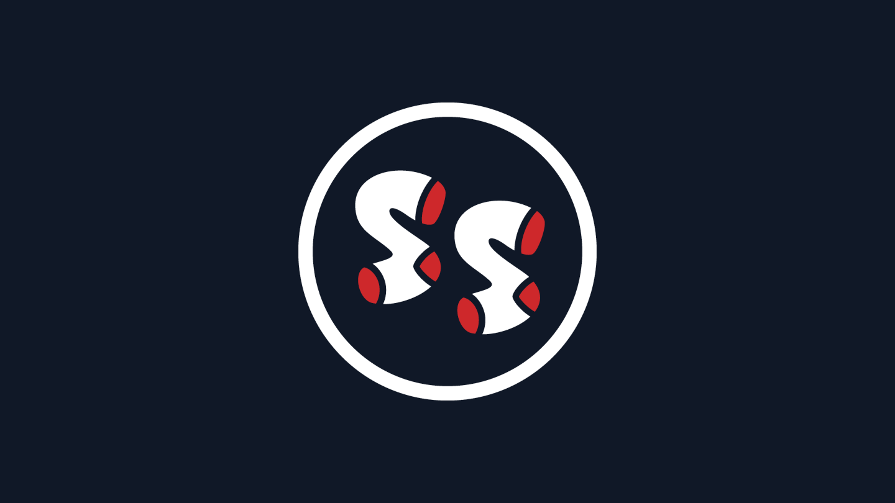

Featured Project
Semantic Visual Search for Creative Teams
Replaced chaotic Dropbox searches with a semantic, vibe-based search experience for 100k+ design assets.
Stack: Next.js/React · TypeScript · FastAPI · Vertex AI · Pinecone · AWS
15/30
Target team members use daily
10x
Faster search experience
~40%
Reduced lost-asset time
🧠 What I Learned
Impact of AI-powered search infrastructure on team productivity — embedding models, vector databases, and scalable systems that eliminate asset discovery friction
✅ Outcome
Validated → scaled → became daily workflow

View Gallery

View Full Size